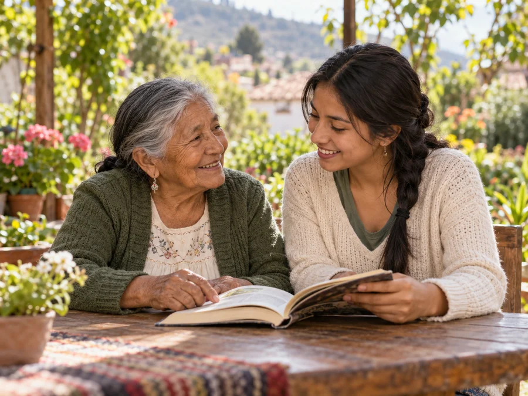

Encuentra una oportunidad
Busca por ciudad o por lo que necesitas. También puedes publicar lo que quieres compartir.
Lo que necesitas saber para dar, recibir y compartir con tranquilidad.
ExplorarSin compras ni ventas. Solo personas que se ayudan.
Busca por ciudad o por lo que necesitas. También puedes publicar lo que quieres compartir.
Contacta por WhatsApp si la persona lo autoriza. Conversen sobre los detalles y acuerden la entrega.
Comparte el objeto, tu conocimiento o tu tiempo. Cada conexión empieza con un pequeño gesto.

Elijan un lugar de encuentro público. Acuerden los detalles antes de desplazarse.
Hablen con claridad y respeto. Cuenta el estado del objeto o lo que incluye tu servicio.
Las actividades con menores se coordinan con una persona adulta responsable. La ayuda se organiza con acompañamiento.
Sí. dóname está pensado para compartir objetos, conocimientos y tiempo sin cobrar. Esta maqueta no incluye compras, ventas ni pagos.
No. Puedes explorar, publicar, guardar favoritos y probar las constancias sin registrarte. Tu actividad se conserva solo en este navegador.
Tu número solo se guarda y aparece en el detalle del anuncio si marcas la autorización al publicar. Puedes editar tu anuncio para retirarlo cuando quieras.
Por ahora no. Este MVP utiliza almacenamiento local. Las publicaciones de ejemplo se ven en todos los dispositivos, pero tu actividad y tus anuncios nuevos quedan en el navegador donde los creas.
Son una muestra del reconocimiento que podría entregar la plataforma. En este MVP las horas son autodeclaradas y las constancias no tienen acreditación institucional.
Publica una necesidad con un título claro, tu ciudad y una descripción de la ayuda que buscas. También puedes probar otra categoría o ampliar la búsqueda a todo Ecuador.
Esta es una maqueta funcional, sin cuentas ni backend. Los anuncios iniciales son ejemplos y los cambios se guardan en tu navegador. Puedes probar todo el recorrido sin enviar solicitudes reales.